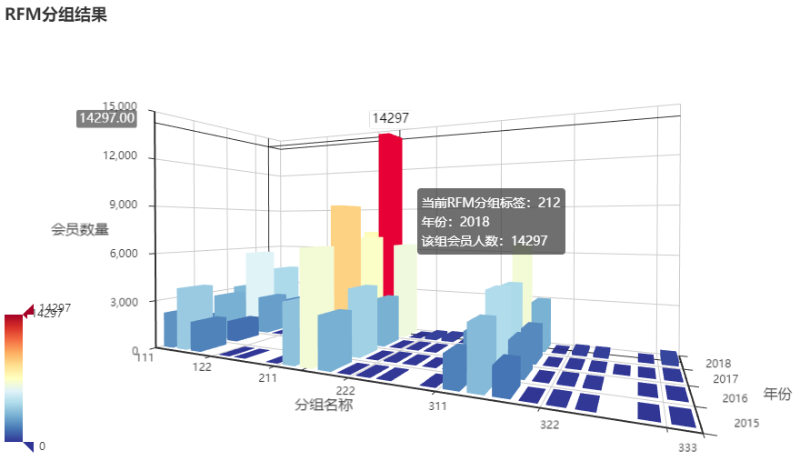

这是数据分析阶段的第一个综合实战：用前几讲的 NumPy、Pandas、可视化和 MySQL 知识，完整实现经典的用户分群模型 RFM——从原始订单数据出发，算出每个会员的价值分组，落地成 Excel/数据库结果和可交互的 3D 图，最后给出可执行的运营策略。
学习目标：知道 RFM 模型的概念和使用方法；掌握用 Python 做 RFM 分群的全流程；知道如何用 Pyecharts 绘制 3D 图形。
一、RFM 模型介绍
1. 模型原理
会员价值度用来评估用户的价值情况，是区分会员价值的重要模型和参考依据，也是衡量不同营销效果的关键指标之一。价值度模型一般基于交易行为产生，最常用的就是 RFM——根据会员的三个维度计算得分：
- R（Recency）：最近一次购买时间。距离截止时间越近，得分越高；
- F（Frequency）：购买频率。次数越多，得分越高；
- M（Monetary）：购买金额。总额越大，得分越高。
用这 3 个维度评估客户的订单活跃价值，常用来做客户分群。注意：RFM 基于一个固定时间点做分析，不同时间计算的结果可能不一样。
按三个维度的高低组合，经典的八类用户划分：
| R | F | M | 用户类别 |
|---|---|---|---|
| 高 | 高 | 高 | 重要价值用户 |
| 高 | 低 | 高 | 重要发展用户 |
| 低 | 高 | 高 | 重要保持用户 |
| 低 | 低 | 高 | 重要挽留用户 |
| 高 | 高 | 低 | 一般价值用户 |
| 高 | 低 | 低 | 一般发展用户 |
| 低 | 高 | 低 | 一般保持用户 |
| 低 | 低 | 低 | 一般挽留用户 |
2. 基本实现过程（五步）
- 设置截止时间节点（如 2017-5-30），基于该时间做数据选取和计算；
- 获取原始数据集：以截止时间向前推固定周期（如 1 年），得到每个会员的会员 ID、订单时间、订单金额（一个会员可能有多条订单）；
- 数据预计算：距截止时间最近的订单时间 → R 原始值；按会员 ID 统计订单数量 → F 原始值；订单金额求和 → M 原始值；
- R、F、M 分区：分别用五分位法（三分位也可以，分位数越多划分越细）做数据分区。F、M 值越大分区越高；R 要倒过来——值越小（离截止时间越近）分区越高；
- 合成 RFM 得分：两种方式——拼接（如 312、555）或加权求和（如 R×0.2 + F×0.2 + M×0.6）。
3. 划分区间与应用思路
确定 RFM 划分区间的常见套路：业务实际判断（如新用户 7 天内交易、日用品采购周期 30 天）、平均值或中位数、二八法则。
Excel 也能实现简易 RFM：TODAY() 算时间差，再用嵌套 IF 打分（如 =IF(D2>60,1,IF(D2>30,2,IF(D2>14,3,IF(D2>7,4,5))))），最后与中位数比较划分高低。数据量不大时完全够用。
得到 RFM 后的两种应用思路：
- 思路 1（拼接得分）：基于 3 个维度值做用户群体划分和解读。例如得分 212 的会员购买频率低——定期发送促销邮件；得分 321 的会员频率高但金额低——用关联/搭配销售提升客单价；
- 思路 2（汇总得分）：评估所有会员的价值度并排名；得分还可以作为其它数据挖掘模型的输入维度。
二、入门版实现：单表五分位法
先用一份简化的销售表（sales.xlsx：USERID、ORDERDATE、AMOUNTINFO）走通最小流程：
import numpy as np import pandas as pd # 1. 导入数据(以 USERID 作为索引) df_raw = pd.DataFrame(pd.read_excel('./sales.xlsx', index_col='USERID')) # 2. 数据清洗: 删缺失值 + 丢弃金额<=1的异常订单 sales_data = df_raw.dropna() sales_data = sales_data[sales_data['AMOUNTINFO'] > 1] # 3. 按用户ID分组, 算出 R/F/M 三个原始值 recency_value = sales_data['ORDERDATE'].groupby(sales_data.index).max() # 最近一次订单时间 frequency_value = sales_data['ORDERDATE'].groupby(sales_data.index).count() # 订单频率 monetary_value = sales_data['AMOUNTINFO'].groupby(sales_data.index).sum() # 订单总金额 # 4. 五分位打分: pd.cut(数据, 5) 等距切成5个区间, labels 指定每个区间的得分 deadline_date = pd.to_datetime('2024-05-01') # 截止时间节点 r_interval = (deadline_date - recency_value).dt.days # R 间隔天数 r_score = pd.cut(r_interval, 5, labels=[5, 4, 3, 2, 1]) # R: 间隔越小得分越高(倒序) f_score = pd.cut(frequency_value, 5, labels=[1, 2, 3, 4, 5]) # F: 越大越高 m_score = pd.cut(monetary_value, 5, labels=[1, 2, 3, 4, 5]) # M: 越大越高 # 5. 三列得分合成一个 DataFrame rfm_list = [r_score, f_score, m_score] rfm_cols = ['r_score', 'f_score', 'm_score'] # np.array(rfm_list) 是 3行N列(每行一个维度), transpose() 转置成 N行3列(每行一个用户) rfm_pd = pd.DataFrame(np.array(rfm_list).transpose(), dtype=np.int32, columns=rfm_cols, index=frequency_value.index) # 6. 策略1: 加权得分(权重按业务定, 这里金额最重要) rfm_pd['rfm_wscore'] = rfm_pd['r_score']*0.2 + rfm_pd['f_score']*0.2 + rfm_pd['m_score']*0.6 # 7. 策略2: 拼接三维度得分(先转字符串, 再用 str.cat 逐列拼接) rfm_pd_tmp = rfm_pd.copy() rfm_pd_tmp['r_score'] = rfm_pd_tmp['r_score'].astype('str') rfm_pd_tmp['f_score'] = rfm_pd_tmp['f_score'].astype('str') rfm_pd_tmp['m_score'] = rfm_pd_tmp['m_score'].astype('str') rfm_pd['rfm_comb'] = rfm_pd_tmp['r_score'].str.cat(rfm_pd_tmp['f_score']).str.cat(rfm_pd_tmp['m_score']) # 8. 导出结果 rfm_pd.to_csv('rfm_result.csv')
加权得分的分层参考：高价值（4.0~5.0）、中等价值（2.0~4.0）、低价值（<2.0）；拼接得分则如 "555"/"554" 是高价值、"343"/"442" 中价值、"111"/"221" 低价值。
可视化分层结果（matplotlib 柱状图/饼图）：
import matplotlib.pyplot as plt # 按加权得分划分客户群体: bins 自定义分层阈值(左开右闭) bins = [0, 2, 4, 5] labels = ['Low', 'Medium', 'High'] rfm_pd['Customer Segment'] = pd.cut(rfm_pd['rfm_wscore'], bins=bins, labels=labels) # 柱状图 rfm_pd['Customer Segment'].value_counts().plot(kind='bar', color=['red', 'orange', 'green']) plt.title('Customer Segments based on RFM Score') plt.show() # 饼图: autopct 显示百分比, startangle 起始角度, counterclock=False 顺时针 rfm_pd['Customer Segment'].value_counts().plot( kind='pie', colors=['red', 'orange', 'green'], autopct='%1.1f%%', startangle=90, counterclock=False) plt.ylabel('') plt.show()
三、完整版案例：四年订单数据分群
1. 案例背景与数据
业务要求：对用户做分组，并概括每组的用户特征，便于精细化运营、做定制化营销。规划把 R、F、M 各离散化为 3 个区间（用户群体最多 3×3×3=27 个）——区间过多不利于拆分，过少则区分不显著。交付结果要求既导出 Excel 供业务二次加工，又写入 MySQL 供其它模型建模使用。
数据集 data/sales.xlsx 是某企业 2015~2018 共 4 年的订单抽样数据，5 个 sheet：前 4 个按年份存订单（字段：会员 ID、提交日期、订单号、订单金额），第 5 个是会员等级表。四年记录数分别为 30774 / 41278 / 50839 / 81349，存在 NA 值和异常值。
2. 读取数据与质量检查
import time import numpy as np import pandas as pd from pyecharts.charts import Bar3D # pip install pyecharts # 1. sheet_name 传列表 → 一次读取多个 sheet, 返回"字典": 键=表名, 值=该表的 DataFrame sheet_names = ['2015', '2016', '2017', '2018', '会员等级'] sheet_datas = pd.read_excel('data/sales.xlsx', sheet_name=sheet_names) # 2. 逐表查看基本情况: 前几行 / 详细信息 / 统计信息 for i in sheet_names: print(sheet_datas[i].head()) print(sheet_datas[i].info()) # 列名, 类型, 非空数量 print(sheet_datas[i].describe()) # count/mean/std/min/分位数/max
从 info/describe 能读出四个关键结论（这一步就是"数据质量检查"）：
- 每个 sheet 都能正常读取；提交日期已被自动识别为日期格式，后期不必转换；
- 订单金额分布不均匀，有明显极值（如 2016 年最大 174900、最小 0.1）；
- 与业务方确认：大额订单有效（一次买多个大家电）；低于 1 元的订单是优惠券支付等非正常订单，需要去掉；
- 有少量缺失值记录，数量不多，丢弃或填充均可。
3. 数据预处理
# 只处理前4张订单表(sheet_names[:-1]), 不含会员等级表 for i in sheet_names[:-1]: # 1. 删除缺失值 sheet_datas[i] = sheet_datas[i].dropna() # 2. 过滤掉金额<=1的异常订单 sheet_datas[i] = sheet_datas[i][sheet_datas[i]['订单金额'] > 1] # 3. 新增 max_year_date 列: 每年最后一笔订单的日期(即每年的12月31日) # 这样后面可以"按年"分别做RFM, 而不是4年数据统一算 sheet_datas[i]['max_year_date'] = sheet_datas[i]['提交日期'].max() # 4. 把4年的订单数据纵向拼接成一个完整的 DataFrame data_merge = pd.concat(list(sheet_datas.values())[:-1], ignore_index=True) # 5. 新增 year 列(记录发生年份) 和 date_interval 列(该订单距当年年末的天数) data_merge['year'] = data_merge['提交日期'].dt.year data_merge['date_interval'] = data_merge['max_year_date'] - data_merge['提交日期'] data_merge['date_interval'] = data_merge['date_interval'].dt.days # timedelta → 天数数字
知识点回顾：
dt是 Series 日期时间属性的访问器，除了year、days，还有 month、quarter、weekday、dayofyear 等一大批属性。
4. 计算 R、F、M 原始值
一次 groupby + agg 同时算出三个维度（否则要写 3 条 groupby）：
# 以 year + 会员ID 为联合主键分组; as_index=False 让分组键保留为普通列 rfm_gb = data_merge.groupby(['year', '会员ID'], as_index=False).agg({ 'date_interval': 'min', # R: 当年最后一次订单距年末的天数(取最小间隔) '订单号': 'count', # F: 当年消费次数 '订单金额': 'sum' # M: 当年消费总金额 }) rfm_gb.columns = ['year', '会员ID', 'r', 'f', 'm']
5. 确定划分区间
先看数据分布，再定边界：
rfm_gb.iloc[:, 2:].describe().T
| 指标 | count | mean | std | min | 25% | 50% | 75% | max |
|---|---|---|---|---|---|---|---|---|
| r | 148591 | 165.52 | 101.99 | 0 | 79 | 156 | 255 | 365 |
| f | 148591 | 1.37 | 2.63 | 1 | 1 | 1 | 1 | 130 |
| m | 148591 | 1323.74 | 3753.91 | 1.5 | 69 | 189 | 1199 | 206251.8 |
# 自定义区间边界(3个区间需要4个值); 注意起始边界要"小于"最小值 r_bins = [-1, 79, 255, 365] f_bins = [0, 2, 5, 130] # f 分布极端, 用业务定义的边界 m_bins = [0, 69, 1199, 206252]
边界怎么来的（面试常问的分析思路）：
- r 和 m 分布相对离散，直接取 25% 和 75% 分位数作为中间两个边界；
- f 无法用分位数——大部分用户一年只买 1 次（min 到 75% 全是 1），这是家电行业属性决定的。与业务部门沟通后用 2 和 5：当年购买 ≥2 次定义为复购用户，>5 次属于非常高价值用户；
- 最小边界必须小于最小值：
pd.cut自定义边界是左开右闭，处在最左边界上的值无法划入任何区间。例如数据 [1,2,3,4,5] 用边界 [1,3,5] 划分：2、3 进 (1,3]，4、5 进 (3,5]，1 会被漏掉——所以 r_bins 从 -1 开始； - 最大边界大于等于最大值即可。
6. 打分与合成分组
# pd.cut(数据, bins=边界列表, labels=每个区间的得分) # R: 间隔越小价值越高 → labels 倒序 [3, 2, 1] rfm_gb['r_score'] = pd.cut(rfm_gb['r'], bins=r_bins, labels=[i for i in range(len(r_bins)-1, 0, -1)]) # F / M: 越大越高 → labels 正序 [1, 2, 3] rfm_gb['f_score'] = pd.cut(rfm_gb['f'], bins=f_bins, labels=[i+1 for i in range(len(f_bins)-1)]) rfm_gb['m_score'] = pd.cut(rfm_gb['m'], bins=m_bins, labels=[i+1 for i in range(len(m_bins)-1)]) # 用 len(bins) 生成 labels 而不是写死 [3,2,1], 改区间数时代码不用动 # 转字符串后拼接, 得到如 "212"、"333" 的分组标签 rfm_gb['r_score'] = rfm_gb['r_score'].astype(str) rfm_gb['f_score'] = rfm_gb['f_score'].astype(str) rfm_gb['m_score'] = rfm_gb['m_score'].astype(str) rfm_gb['rfm_group'] = rfm_gb['r_score'].str.cat(rfm_gb['f_score']).str.cat(rfm_gb['m_score']) # 查看每年每种分组的会员总数 rfm_gb.groupby(['year', 'rfm_group'])['会员ID'].count()
Series.str.cat(others, sep=None)：把右侧数据逐元素拼接到左侧。例如pd.Series(['a','b']).str.cat(['A','B'])得到['aA','bB']；传sep=','则是['a,A', 'b,B']。
7. 保存结果：Excel + MySQL
# 1. 导出 Excel(index=False 不写索引列) rfm_gb.to_excel('sales_rfm_score1.xlsx', index=False) # 2. 写入 MySQL(数据库需提前创建) from sqlalchemy import create_engine engine = create_engine('mysql+pymysql://用户名:密码@localhost:3306/rfm_db?charset=utf8') rfm_gb.to_sql('rfm_score', engine, index=False, if_exists='replace') # if_exists: 'replace' 存在则覆盖 / 'append' 存在则追加 # 3. 回读验证 pd.read_sql('select * from rfm_score limit 100;', engine) pd.read_sql('select count(1) from rfm_score;', engine)
8. Pyecharts 3D 柱形图展示
展示"每个 RFM 分组、每个年份的会员数量"，三个维度正好用 3D 柱形图：
# 1. 汇总图形数据: 分组 × 年份 → 会员数 display_data = rfm_gb.groupby(['rfm_group', 'year'], as_index=False)['会员ID'].count() display_data.columns = ['rfm_group', 'year', 'number'] display_data['rfm_group'] = display_data['rfm_group'].astype(int) # 2. 绘制 3D 柱形图 from pyecharts.commons.utils import JsCode import pyecharts.options as opts range_color = ['#313695', '#4575b4', '#74add1', '#abd9e9', '#e0f3f8', '#ffffbf', '#fee090', '#fdae61', '#f46d43', '#d73027', '#a50026'] # 颜色池 range_max = int(display_data['number'].max()) c = ( Bar3D() # 3D柱形图对象 .add( "", # 图例 [d.tolist() for d in display_data.values], # 数据 xaxis3d_opts=opts.Axis3DOpts(type_="category", name='分组名称'), yaxis3d_opts=opts.Axis3DOpts(type_="category", name='年份'), zaxis3d_opts=opts.Axis3DOpts(type_="value", name='会员数量'), ) .set_global_opts( visualmap_opts=opts.VisualMapOpts(max_=range_max, range_color=range_color), title_opts=opts.TitleOpts(title="RFM分组结果"), ) ) c.render() # 渲染保存为本地网页 # c.render_notebook() # 或直接在 Jupyter Notebook 中显示

图可旋转、缩放，左侧滑块可以按会员数量过滤分组。
四、案例结论与运营策略
1. 图形分析要点
- 重点人群：212 群体——相对集中且变化最大，2015~2017 数量平稳，2018 年增长近一倍；
- 重点分组：312、213、211、112 各自规模不大，但总量合计超过 212 本身，也要重点分析；
- 拖动滑块过滤后发现很多分组人群极少甚至没有人。
2. 分层运营策略（按用户量级分三类）
第 1 类：占比超过 10% 的群体——基数大，必须靠系统/产品批量运营，不能依赖人工：
| 分组 | 定位 | 策略 |
|---|---|---|
| 212 | 可发展的一般性群体 | 礼品兑换赠送、购物社区活动、签到、免运费等常规手段维持并提升消费 |
| 211 | 可发展的低价值群体 | 在 212 策略上增加订单刺激：组合商品优惠券、积分购买商品 |
| 312 | 有潜力的一般性群体 | 最近刚购买过——借上次购买的商品定制关联推荐，向上销售提频提额 |
| 112 | 可挽回的一般性群体 | 已近流失——邮件/短信触达挽回，流失用户专享优惠券促进复购 |
| 213 | 可发展的高价值群体 | 重点提升购买频率：节日活动、每周新品推送、高价值客户专享商品 |
第 2 类：占比 1%~10% 的群体——数量适中，产品和人工都可接入：
- 311 有潜力的低价值群体：同 211 策略，另在其最近接触渠道上加投营销资源；
- 111 各维度都差：其它群体策略落地后再考虑；先用优惠券+特价商品刺激首次转化；
- 313 有潜力的高价值群体：新近度高、金额高但频率低——只要提频，贡献价值就倍增；
- 113 可挽回的高价值群体：在 112 策略基础上增加人工介入（线下访谈、电话沟通）。
第 3 类：占比极少但价值极高的群体：
- 333 绝对忠诚的高价值群体（仅 355 人）：倾斜资源做 VIP 服务、专享服务、绿色通道；
- 233、223、133 一般性高价值群体：重点促成"最近一次购买"，用 DM、电话、拜访、微信、邮件直接建立挽回通道；
- 322、323、332 有潜力的普通群体：刚完成购买，用交叉销售、个性化推荐、组合优惠券提升频次与金额。
最终落地：会员部门按三类群体制定了不同的运营排期；入库的 RFM 得分也已成为其它数据模型的关键输入特征。
五、案例注意点
- 行业差异：大家电等消费周期长的行业更看重 R 和 M；快消行业更看重 R 和 F。维度优先级要与业务部门沟通确认；
- 区间个数：划分 3 个区间产生最多 27 组，业务方要制定十几套策略可能过多；简化可划 2 个区间（最多 8 组）。划几个取决于业务方能投入多少资源；
- 权重打分：除了等距/分位数建模，结合业务经验的专家打分也常用，推荐配合 AHP 层次分析法，权重更科学严谨；
- 数据质量：订单库也会因采集、同步、ETL、误操作产生 NA 值；时间字段的类型转换要提前完成；
- 适用范围：RFM 一般用于零售等复购率较高的行业，并非所有业务场景都适用；
- pd.cut 的区间默认左开右闭——最小边界一定要小于数据最小值，否则边界上的最小值会被漏掉。
六、本讲小结
| 主题 | 关键点 |
|---|---|
| RFM 模型 | R 最近购买间隔（越小越好）、F 频率、M 金额；区间和得分自定义；基于固定时间点分析 |
| 五步流程 | 定截止时间 → 取原始数据 → 算 RFM 原始值 → 分区打分（R 倒序）→ 拼接或加权合成 |
| 核心代码 | 多 sheet 读取返回字典；concat 合并四年；dt.year/dt.days；groupby+agg 一次算三值；describe().T 看分布定边界；pd.cut+labels 打分；str.cat 拼接 |
| 结果落地 | to_excel + to_sql 双出口；pyecharts Bar3D 三维展示 |
| 业务解读 | 按量级分三类群体，分别配批量运营 / 产品+人工 / 高价值专属策略 |
这套"读数 → 检查 → 清洗 → 聚合 → 离散化 → 出结果 → 讲结论"的流程，就是数据分析项目的标准骨架，值得反复咀嚼。